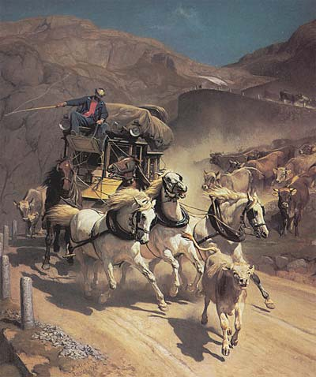
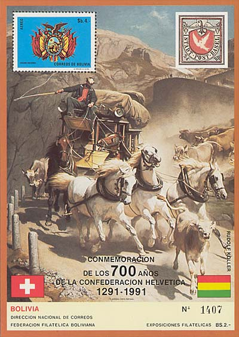

Copyright © 2003 by Victor Manta, Switzerland.
All rights reserved worldwide.

Click the banner above to visit
the site
Rudolf Koller
The St. Gothard Mail Coach
21st May 1828: Birth of Rudolf in Zurich, in the Augustinergasse, as a son of a butcher and of Maria Ursula Forster from Schaffhausen.
1840-43 Study at the Kantonale Industrieschule. Already 12 years old, he wishes to become
a painter of horses.
1845 Study of horses at the stud of King of near Stuttgart. First
orders for paintings of horses and dogs.
1846-47 Study visit at the
Academy of Art Düsseldorf, class Carl
Ferdinand Sohn. Friendship between R. Koller and Arnold Böcklin.
Anselm Feuerbach, a colleague, admires Koller's work.
1847 Journey with Böcklin to Brussels, then to Antwerp and alone to
Paris. Copies of works of painters from Low Countries from the 17th
century, found in Louvre. Study of modern painters, like with
the animal painter Jacques Raymond Brascassat, later study of nudes.
1848 April: back to Zurich due to money problems.
1849-50 Nature studies in Hasliberg at Brünig. Journey with Ulrich
and Gustav Heinrich Ott to München. Make acquaintance with Johann
Gottfried Steffan and Friedrich Voltz.
1851 April: Back again to Zurich. Friendship with Robert Zünd and
Ernst Stückelberg.
Mai: Opening of an Ateliers in Zürich-Oberstrass. Bigger orders for
animal paintings.
1852-53 Malt Terrain studies in collaboration with Robert Zünd on
Walensee.
1856 5. Mai: Marriage with Bertha Schlatter. Honeymoon trip to
Vienna.
1857 Koller paints "Cow in herb garden" (Kunsthaus Zürich).
Friendschip with Gottfried Keller, Jacob Burckhardt and Friedrich
Theodor Vischer.
1862 Purchase and reconstruction of the house "Zur Hornau" at
Hornbach at Zürichhorn, where he will live till his death. Has
animals there, in order to study them.
1865 Important style change in Koller's work, thank to the meeting
with the plain air painters of modern French art.
1868-69 November till June: Trip to Italy (Florence, Rome, Naples).
Study of nature.
1870 Outbreak of an eyes illness that will more and more influence
his work.

1872 Journey to Riviera.
1873 Longer stay in Vienna. First version of "Gotthardpost" (Kunsthaus
Zurich).
1874 Copy of "Gotthardpost".
1885-92 Böcklin is in Zurich. Intensive contacts to Koller.
1888, 1891, 1894 Koller's journeys to München.
1898 70 birth anniversary. On the 1st of Mai opening of a big
exhibition in Zurich, with over 20'000 visitors. Doctor Honoris
causa of Zurich University.
1900 Last trip to Italy Italy, last meeting with Böcklin in San
Domenico at Florence.
1905 5th of January: Rudolf Koller dies in "Hornau".
Monument in the
cemetery Sihlfeld, Zurich, near Gottfried Keller.
(after:
http://www.kunsthaus.ch/ausstellungen/2002/rudolf_koller/biographie.htm)
Translated from
German by Victor Manta.

The Gotthard Post (Gotthard Mail Coach) is not only the most renown painting of Rudolf Koller, but, probably, of the whole Swiss painting. The idea of this painting came actually from the wife of the painter, but, of course, the composition is entirely his. It differs from most other paintings of him (very often showing wonderful, peaceful Swiss cows) by its dramatic sense and also by the humorous apparition of a lost calf in face of the galloping coach.
Between 18 December 2002 and 18 Mai 2003 the
exhibition at Kunsthaus Zurich shows Rudolf Koller's most
representative works. I have visited this exhibition on the 7th of
January 2003, and I can say that I have discovered this remarkable
painter.
( http://www.kunsthaus.ch/ausstellungen/2002/rudolf_koller/index.html
)
| Published:
01/08/2001. Revised: 01/08/03. Copyright © 2003 by Victor Manta, Switzerland. All rights reserved worldwide. |
|